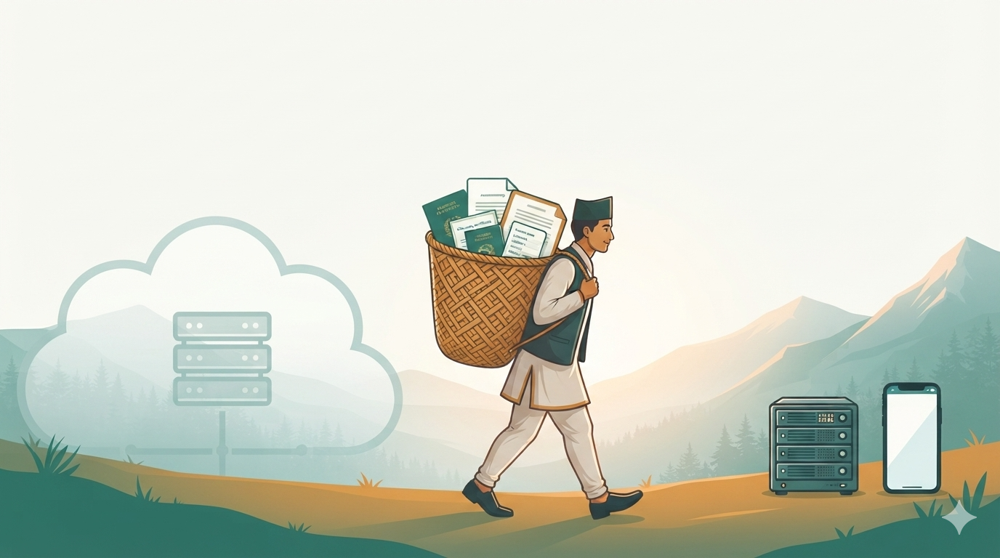
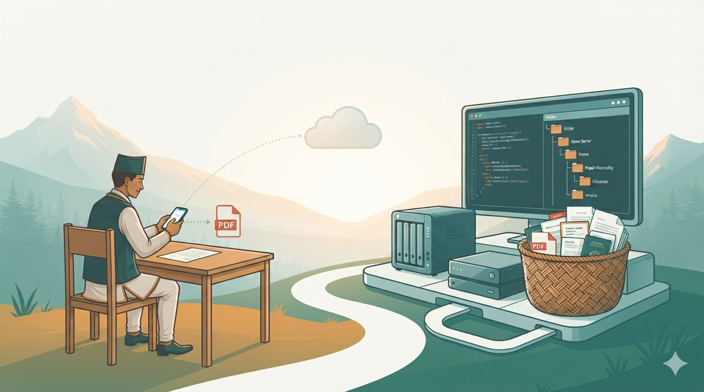

Blog
Notes from the DokoDocs team.
Privacy-first scanning, open-source transparency, self-hosted sync, and on-device AI — written by the people building it.

Why DokoDocs? Building an Open-Source Scanner That Gives Back
Millions of people scan passports, contracts, and medical records every day. Few ask where those documents actually go. DokoDocs was born from that question.
Read article →
Why We Chose Open Source (Apache 2.0)
Trust should be something people can verify, not something they have to assume. Why we publish every line of code — and why Apache 2.0 was the right license.
Read article →
The Vision of DokoDocs: From Privacy-First Scanner to Open Document Platform
Self-hosted sync, on-device AI and OCR, enterprise deployments, white-label editions — the roadmap from a simple scanner to an open document platform.
Read article →